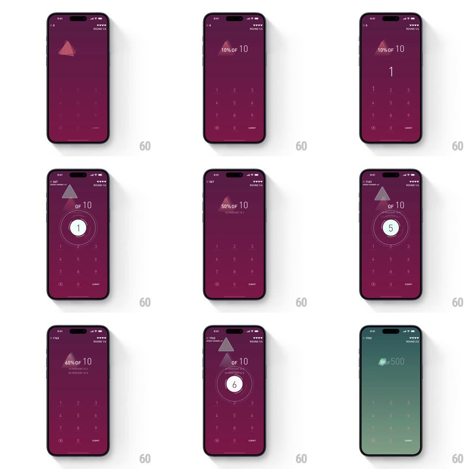

Media
Frame-by-frame

Rebuild this interaction 1:1: Elevate's math workout loop - typing an answer on the keypad and submitting expands it into a pulsing green badge that flies up into the score, the round counter ticks, and the next question slides in.

Rebuild this interaction 1:1: Elevate's math workout loop - typing an answer on the keypad and submitting expands it into a pulsing green badge that flies up into the score, the round counter ticks, and the next question slides in.
## Integration
Integration: stack-agnostic spec - springs given as stiffness/damping, timed motions as duration + curve; map every value to your framework and animation library of choice.
## Scene
Plum workout screen: score top-left, hearts and ROUND n/4 top-right, a big centered question ("10% OF 10", "50% OF 10") with a floating geometric shard motif, the typed answer large beneath it, and a numeric keypad with SUBMIT.
## Motion spec
Pattern: answer-to-score flight.
- Keys press with a quick dip (scale 0.92, 80ms); the answer digits appear above the keypad with a small pop each (scale 1.2 -> 1, 150ms).
- Submit correct: the answer morphs into a filled green circle badge (color wipe 150ms) that pulses twice (scale 1 <-> 1.15, 180ms each), then launches upward along a slight arc into the top-left score (450ms, ease-in), shrinking as it flies; the score ticks up with a digit roll on impact and flashes green once.
- The question shard motif drifts continuously (slow float, 6s loop) behind the text.
- The next question slides in from the right (300ms, ease-out) as the old one exits left; ROUND n/4 ticks with the changeover.
- Wrong answers: the badge flashes red, shakes (+-8px, 3 cycles, 300ms), and a heart empties top-right.
## Calibration
- The flight path is the reward - it must visibly CONNECT the answer to the score.
- Green badge, red shake: instant color grammar, never mixed.
## Reduced motion
Badge fades; score updates in place.
## Don't miss
- The badge's pulse happens BEFORE the flight - celebrate, then bank.
- The shard artwork keeps floating through question changes; it anchors the screen.